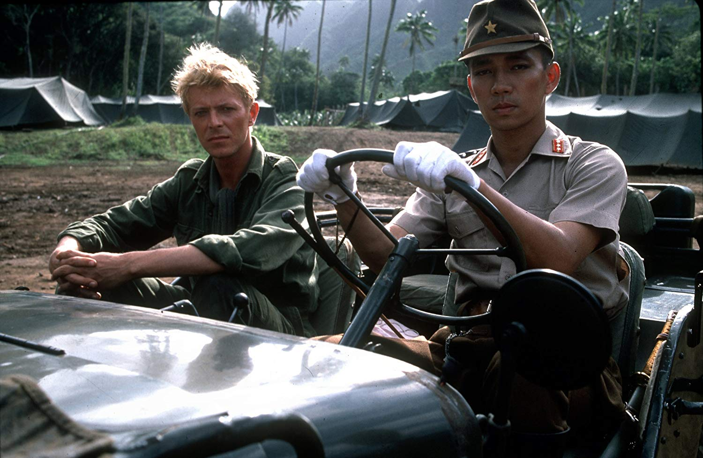

Tropical Dandies: Merry Christmas, Mr. Lawrence, Exoticism, and Popular Music

The flavour of the [Eurasian] continent which the Silk Road transverses, sophisticated Parisian elegance, Spanish passion, African energy, the marine flavor of the Caribbean, all of them are cooked up in a stew. Then this stew gets taken to America, the inclusive, all-embracing continent, where the final spices are added. Then, after, I wonder ‘What will happen if I add one more spice?’ This is what I have to do. I am almost obsessed by this conviction. In short, I let the music travel across the Pacific to add a drop of soy sauce to it. This is what I want to do. I name this form ‘Soy Sauce Music’”
—Haruomi Hosono, quoted in Shūhei Hosokawa, “Soy Sauce Music: Haruomi Hosono and Japanese Self-Orientalism,” in Philip Hayward (ed), Widening the Horizon: Exoticism in Postwar Popular Music (Sydney: Perfect Beat Publications, 1999): 123.
‘Japan’ is not an inferior Orient any more and, no less importantly, has become ‘pleasurably exotic’ to the Japanese themselves
—Koichi Iwabuchi,“Complicit Exoticism—Japan and Its Other.” Continuum, 8.2 (1994): 70).
Location Location Location
The island of Rarotonga is located in the South Pacific some 3,233 km. (a little of 2,000 miles) northeast of New Zealand; a flight from Auckland takes a little over four hours to get there. The largest of the archepelago known since the 19C as the Cook Islands, in honor of James Cook’s visits in the late 18C, it’s a little under seven miles in length with a population of around 10,500. According to Lonely Planet, its first recorded European visitor was Philip Goodenough, captain of the Cumberland, whose arrival in 1814 reportedly resulted in skirmishes with the local inhabitants. Ostensibly a sovereign island nation today, the Cook Islands has historically been a protectorate of the New Zealand government. The volcanic island is the quintessential exotic paradise of white sand beaches, lagoons, and reefs, and it comes as no surprise that its main source of revenue is as a resort for the 100,000 or so tourists that reportedly visit it annually. As you can see, its spectacular landscape makes it a popular subject on Dronestagram. Simon Winchester’s 500-page classic survey The Pacific (1991) makes no reference to Rarotonga, and only mentions the Cook Islands twice in passing.
Rarotonga also happens to have been the location for the shooting of the 1983 film, Merry Christmas, Mr. Lawrence (1983). A prisoner-of-war drama set in Japanese-occuped Java in 1942, the film was based on the fictionalized account of his experiences in a Japanese prisoner-of-war camp in Java of the South African writer Laurens Van Der Post, a novella originally titled The Seed and the Sower (1963). An initiative of British producer Jeremy Thomas, the film was unusual against from the jingoistic genre of British POW movies since Bridge on the River Kwai (1957), in being an Anglo-Japanese co-production: directed by Japanese auteur Nagisa Ōshima, it was produced by an almost entirely Japanese crew, with a cast that starred Japanese musician Ryūichi Sakamoto, TV comedian Takeshi Kitano before his career as a filmmaker, British actor Tom Conti, and British rock musician David Bowie. Sakamoto also composed the soundtrack, the first of what was to become a long career as a film composer, which won a BAFTA award. [Its main theme proved so popular that Sakamoto grew weary of the relentless demands to play it.] The film’s plot hinged on what was taken to be the homoerotic fixation of the camp’s Japanese commander, Captain Yonoi (Sakamoto), with the rebellious officer Jack Celliers, played by Bowie. The film’s most dramatic moment is when Celliers breaks rank to protect the British soldiers’ commander, who is about to be executed by Yonoi, first defiantly blocking his path and then resolutely planting a kiss on each of Yonoi’s cheeks, a deliberate violation of the Samurai bushidō code of honor that triggers such conflicting feelings in Yonoi that he collapses. Celliers subsequently finds himself buried up to his neck in sand as punishment for the outrage. Before he dies, Yonoi visits him and snips off a lock of his hair as a memento.
The bulk of the film was shot over five weeks with Rarotonga doubling as wartime Java, while several flashback sequences from Cellier’s schooldays in South Africa being shot in Auckland. The choice of such a remote location for the shoot was in part economic, according to Jeremy Thomas, involving favorable tax conditions offered by the New Zealand government; in addition, the resemblance of the island’s physical geography to that of Java, its natural beauty, and its isolation from the prying eyes of fans and paparazzi, also made it highly desirable.
While the film was enjoyed considerable success at the time of its release, screening at Cannes and subsequently around the globe, the resurgence of interest in it over the past decade is in itself a subject for reflection. In 2010, it was reissued on Blu-Ray and DVD in the prestigious Criterion Collecton series. In addition to an HD digital transfer [DETAILS,] the release included several hours of special features, including a BBC making-of documentary, archival and new interviews with cast and crew, and a brochure featuring an article by Chuck Stephens titled “Lawrence of Shinjuku” and interviews with Ōshima and Kitano. In 2016, Sakamoto’s soundtrack was reissued on vinyl, CD, and digital formats, with newly-commissioned artwork by Belgian illustrator Laurent Durieux, that mimicked the modern woodblock prints of the Shin Hanga movement. Hasui Kawase (1883-1953), “Full Moon at Hiroura” (1946).
At this point, I should probably issue a disclaimer, which may be a source of disappointment to some. I am not interested here in producing another textual analysis of the narrative and character relationships of MCML; nor in the similarities and differences between the film and Laurens VDP’s original novella; nor am I concerned with placing the film within the auteurist framework of Nagisa Ōshima’s work, or for that matter Takeshi Kitano’s. I will not be assessing the film’s historical accuracy as a representation of its subject, nor considering its relationship to the historical genre of the prisoner-of-war film. I am interested in turning inside-out the framework within which the film has been exclusively approached to date, by reading it through the lens not of cinema studies but of popular music studies—an approach that doesn’t seem altogether unreasonable given that both of the film’s two leading actors were highly respected popular musicians.
As Ryūichi Sakamoto puts it in one of his many interviews about the film, MCML was “more than a movie – more like an event,” and this is how I also want to approach the film here. My primary focus is less on the film itself than on the narratives and discourses surrounding it, in the interviews with Jeremy Thomas, Ryūichi Sakamoto, Tom Conti, and the film’s writer, Paul Meyersberg, included on the Criterion reissue. Ōshima and Bowie are structuring absences throughout these interviews, not present on camera yet continually referenced in the narratives of the film’s production, and continually visible in vérité-style film stills taken during the shoot. From these narratives there emerges a kind of shadow version of MCML that, while it may lack the emotional intensity of the film itself, is no less fascinating. Unlike Les Blank and Maureen Gosling’s documentary and book about the location shoot of Werner Herzog’s Fitzcarraldo in the Amazon jungle, Burden of Dreams, or the documentary Hearts of Darkness, about the production of Coppola’s Apocalypse Now, or In Search of Kundun, about that of Martin Scorsese’s Kundun, or even Lost in La Mancha (about Terry Gilliam’s efforts to remake Don Quiojte), we do not have the benefit of a complete making-of documentary, although the 30-minute BBC short The Oshima Gang is like a rudimentary sketch for one. Instead, this movie-on-the-margins-of-the-movie is glimpsed only in fragments across multiple audiovisual texts, both visible and narrated. This doesn’t mean either, however, that I’m merely going to provide an anecdotal account of the film’s production.
What interests me about the film is that it was in its time a unique example (at least to my knowledge) of a British-Japanese co-production, and has remained so to this day; a British prisoner-of-war drama in the River Kwai lineage, but with a Japanese director, DP, production designer, and other crew. It thus complicates what was to become the paradigm of “world cinema” as a collection of national cinemas associated with the work of film auteurs of the nationality in question. While the limitations of that paradigm have in recent decades become increasingly evident, MCML shows that they have already been so since at least the 1980s (and I’m not even going to mention Doctor Zhivago and other 1960s co-productions).
I want to contextualize the film within a broader history in which film is only one element, that of postwar creative encounters and collaborations between Japanese and Anglo-American musicians. Interestingly, given that the film’s two lead actors were both popular musicians, examples of such collaborations are a lot easier to find in popular music than in cinema, the archetype being of course the artistic relationship between Yoko Ono and John Winston Lennon. Over the decade preceding MCML, Japanese musicians like the London-based Sadistic Mika Band and Sakamoto’s own band, The Yellow Magic Orchestra (who appeared on the US TV show Soul Train), had achieved international recognition in the UK and US, while UK bands like the revealingly-named Japan looked east for inspiration. This was in part the climate from which MCML emerged, while the film itself was a catalyst for later collaborations: between Jeremy Thomas and Ōshima in the latter’s film Gohatto; and between Sakamoto and Japan’s former vocalist David Sylvian, who performed the film’s theme song on the single release “Forbidden Colours.”
Us and Them
For a little over a month, then, early in the 1980s, an unprecedented assortment of British and Japanese film producers, actors, and musicians came together on a remote Pacific Island together to make a movie. By far the most common question from interviewers was some version of “what was it like to work with X?” While everyone is essentially asked what it was like to work with everyone else, the centre of attention was probably the encounter between the filmmaker and the rockstar, Ōshima and Bowie. Sakamoto mentions playing rock’n’roll standards with Bowie in the downtime after the day’s shoot on a drum kit at the local bar, with Bowie singing and playing guitar. Ōshima is asked how it was working with the comedian Kitano; and so on. What resulted from these encounters, it becomes clear from the interviews, was a kind of crash-course on each side’s language and culture: Jeremy Thomas, for example, recounts that between the year and a half or so between their initial scouting visit to Rarotonga and the shoot itself, Ōshima had acquired enough English to direct the British actors. Tom Conti, who spoke no Japanese yet appears to speak it fluently as Lawrence in the film, reports the intensive language drilling he received from Roger Pulvers, a New Yorker who spoke bilingual Japanese [and numerous other languages.] Sakamoto had to speak English with Conti in a number of scenes. [CLIP?] Referencing a scene in the film in which a Japanese soldier is beheaded after performing the ritual suicide known as seppuku, Jeremy Thomas recounts his amazement at seeing Ōshima’s elderly DP, Tōichirō Narashima, cleanly slice the head off a mannequin with a sword to show a Japanese actor the proper way to do so, only to learn that he’d acquired the skill as a soldier during the war.
Perhaps the most interesting discovery for the British, however, was Ōshima’s very different approach to the production process itself. [CLIP: JT] economic use of film by of Japanese producers.]
Exotica
From Diderot to Paul Gauguin, the South Pacific has in the European imagination been the privileged site of the exotic, and the term comes up repeatedly in discussions of the film’s production. Jeremy Thomas describes making the film as “sort of like a journey into the exotic, under controlled conditions;" for Tom Conti,”it wasn't a little movie set in London, and getting in and out of taxis - it was going to an exotic place, with a big film crew, to work with this exotic director."
In his study of the music of Haruomi Hosono (later in the decade to become Sakamoto’s bandmate in the Yellow Magic Orchestra), Shūhei Hosokawa notes that “the exotic gaze of the West covers not only Japan but also the ‘Rest’ of the globe.” As Hosokawa describes, Hosono’s series 1970s “tropical dandy” albums pastiched the international styles of popular music, including the western orientalist and exoticist music of Americans like Martin Denny and Les Baxter—a mélange of international styles with the addition of a drop of Japanese “spice” that Hosono dubbed “Soy Sauce Music”. [Hosokawa also notes that “what is exotic for the west is also recognised as such by the Japanese,” the only exception being, of course, the exoticism of Japan itself (1999: 131).] While deconstructing the musical simulacra of western exoticists like Denny, as Hosokawa demonstrates, Hosono was no less concerned with critiquing the cultural and musical insularity of Japan, and Tokyo in particular. For Hosono, Tokyo was an island containing lots of other isolated islands, against which he embraced the archipelagos of the Caribbean, Hawaii, and the islands that include Okinawa, which allow for the possibility of cultural exchange and mixing.
Hosono’s critique of Japanese cultural insularity and his concept of the archipelago provide an interesting framework for thinking about the island of Rarotonga within an archipelago of the Cook Islands, as a location for for the encounter of two tropical dandies, in the form of Bowie and Sakamoto, and the cultural mixing and exchange that resulted from it. It also provides a way of thinking about the nature of the exotic in MCML, whether in terms of the British perception of the Japanese or vice versa. Applying Hosono’s concept of “Soy Sauce Music” to film, could MCML be considered a “Soy Sauce Movie”?
This brings us, inevitably, to Sakamoto’s soundtrack to the film, a work of electronic exotica which can be seen as a counterpart to Hosono’s “Soy Sauce Music” of the previous decade. Like Hosono’s music, Sakamoto’s is centrally concerned with exploring the exotic in music, and deconstructing the simplistic us-them binary of East and West by looking at the cultural self, as Hosono calls it (quoting Brecht), “through the eyes of a stranger.” Asked about “the theme of East meets West” in an interview, Sakamoto mentions the band he formed with Hosono and Yukihiro Takahashi, Yellow Magic Orchestra, which “broke some kind of border between East and West.” The soundtrack to MCML was conceived along similar lines: “The music I wanted to write was something very far from both West and East, as if it comes from nowhere, in other words, it must sound very nostalgic and at the same time very exotic for both western people and eastern people – Asians. It wasn’t easy!” On the one hand, he explains, the theme of Christmas evoked the sound of European church bells; on the other, the narrative’s location in Java was evocative of gamelan music (he’d visited another location of the exotic imagination, Bali, sometime before). The soundtrack that resulted was inspired by both but sounded like neither, an electronic “bamboo music” produced, apppropriately, on a sampler. While using the pentatonic scale heard by western exoticists as the sound of “oriental” music, the theme music didn’t use gamelan tunings or even gamelan instruments at all: the metallic, gamelan-like samples were produced by striking wine glasses. Other than some piano and strings in places, the soundtrack is almost entirely electronic, produced with a sampler and synthesizer that work to prevent identifying it with any authentic musical tradition, whether western or Asian. If it sounds other-worldly, it’s because it’s meant to.
Through the Eyes of a Stranger
To recapitulate: Haruomi Hosono’s tropical dandy records deconstructed insular conceptions of the “exotic” – whether in American or Japanese form – with the archipelago musics of the Caribbean, Hawaii, and Okinawa. His collaboration with Ryūichi Sakamoto and Yukihiro Takahashi as the Yellow Magic Orchestra similarly sought to break down the simplistic east-west binary in a music that both pastiched the German band Kraftwerk and parodied western techno-orientalist fantasies of Japan as “the future.” Sakamoto’s soundtrack to MCML was both a continuation of these earlier projects, a location-less, futuristic music that managed to sound as exotic to Japanese ears as it was to British and American ones. As a unique cultural event, the shooting of MCML itself arguably served a similar function for those who participated in it. For a few short weeks, on a South Pacific island in the early 1980s, it enabled a group of filmmakers and musicians to see themselves their own culture through the eyes of a stranger, as well as British and Japanese audiences in the the decades that followed. It was a process that has continued to this day, and arguably remains the film’s most lasting achievement.
Double Fantasy
Summing up the continuing appeal of MCML in 2010, Jeremy Thomas commented: "the film still has a sort of currency in its values, and in today's warring planet, it is so strong. It says everything that we believe: we are victims of men who think they are right. So when you see that in a movie, subtly smuggled in by Ōshima, with a knockout punch at the end of the film - you show that film today to people, and they really get it." Rather than the film’s universalism, however, I prefer to see its transnational appeal on both the British and Japanese side, as another instance of what in my book about the Japanese musician Cornelius I call a double fantasy.